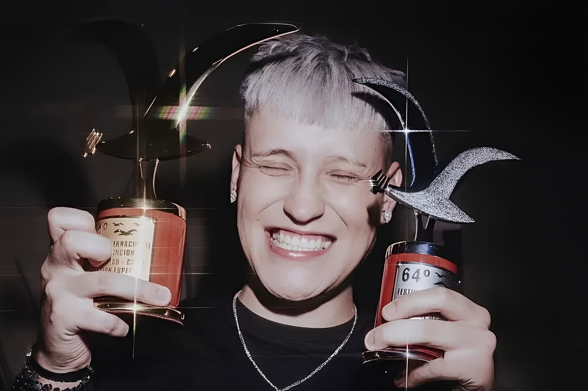
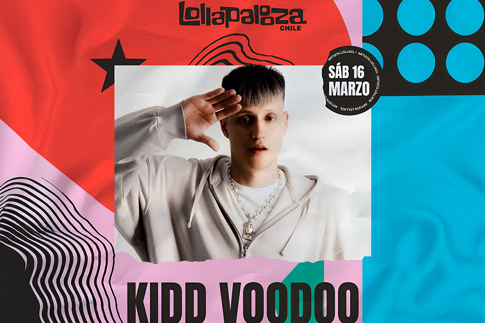
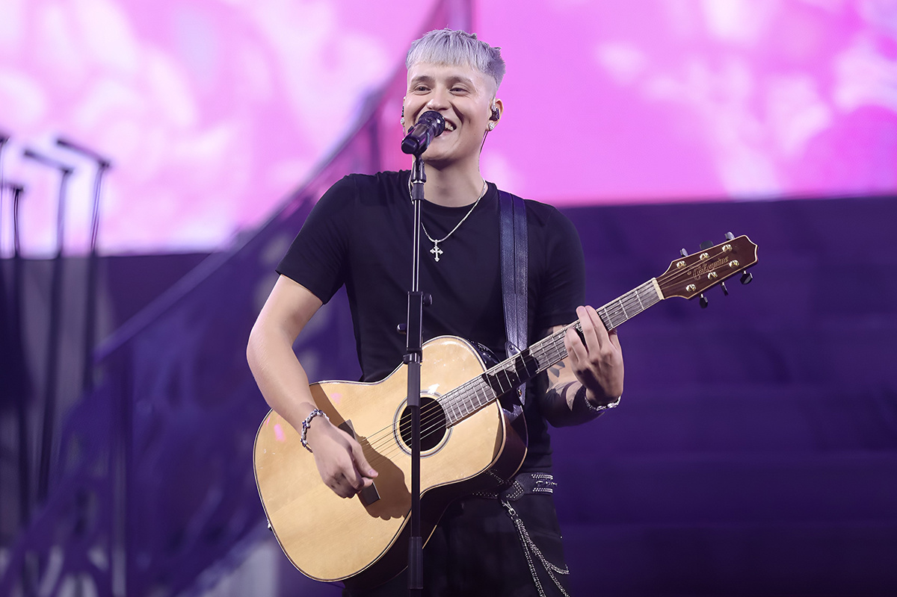
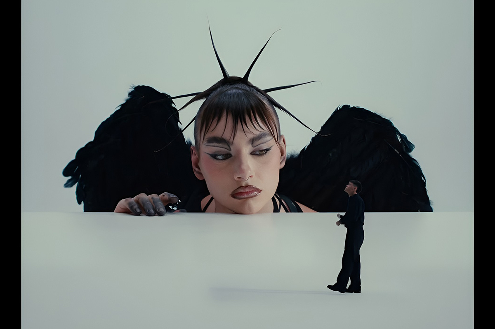

Kidd Voodoo y los siete Movistar Arena
¿Qué hace diferente al artista chileno del momento?
¿Qué hace diferente al artista chileno del momento?

23 años. Solo 23 años tiene el artista chileno urbano del momento que logró, de manera histórica, convertirse en el primer artista nacional en agendar siete shows consecutivos en el Movistar Arena debido al tremendo éxito de ventas. Y ojo, que cinco de estos conciertos se lanzaron en menos de 24 horas. Con este tremendo éxito, no creo que esté de más preguntarnos ¿Qué hace a Kidd Voodoo tan especial?
El nombre Kidd Voodoo venía sonando fuerte hace un par de años. Sin embargo, con su presentación en la más reciente edición del Festival de Viña y con su show en el Lollapalooza del 2025 junto a Resonancia Etérea, quedó claro ante todo el país (incluso ante aquellos que no lo conocían por ningún lado) que el arrastre del artista es contundente, con una fanaticada numerosa y fiel que le hace la segunda en todas.
Ahora, fácilmente podríamos diseccionar por qué tras el éxito de Kidd Voodoo, o al menos considerar los hitos y elecciones que lograron que el artista lograra tocar las estrellas en un país, para muchos, ingrato, con sus artistas locales.

Tras este evento, y con el anuncio sucesivo de un total de siete conciertos en el Movistar Arena—recinto que, cabe recordar, llega a una capacidad que supera las 16 mil personas—definitivamente nos tenemos que preguntar qué hizo que Kidd Voodoo se destacara entre sus pares en medio de una industria nacional que se encuentra en su Peak de popularidad si de música urbana se trata.
Es que, dentro de todo, en una oleada nacional urbana que está sonando fuerte y consistente no solo a nivel nacional, sino que, con algunas canciones, llamando la atención incluso en la esfera internacional, Kidd Voodoo se aleja lentamente de los ritmos ligados al reggaetón y el trap para inmiscuirse en uno de sus géneros favoritos: el rock.
Según las declaraciones del mismo Kidd Voodoo al medio Publimetro, su deseo es dar un paso al costado con lo que respecta a la música urbana, comentando que "en cinco años más me gustaría poder dar un concierto de canciones solo de rock y vivir ese sueño de niño de la guitarra, del solo”, y eso lo demostró también en el Festival de Viña, donde serenó a pura voz y guitarra a un “monstruo” dominado y rendido a sus pies.
Y puede que justo en esta dicotomía entre géneros musicales, en conjunto a su honestidad al componer y al hecho de mostrar un interés irrestricto en otras esferas, sea donde se encuentre el principal secreto tras su éxito.

Sin ir más lejos, su último álbum estudio “Satirología Vol.3” muestra en todo su esplendor el trabajo junto a su banda, Resonancia Etérea, agrupación que nació el 2016 y que fue testigo de los primeros pasos musicales del Kidd Voodoo antes de hacerse mayormente conocido por su faceta urbana.
“Satirología Vol.3”, además de contener varias canciones junto a esta agrupación, incluso cuenta con una colaboración junto a Los Bunkers con el single “Debo Aterrizar”, el que ya sobrepasó el millón de reproducciones en Spotify. De hecho, esta no es la primera vez que Kidd Voodoo colabora con la popular banda chilena, ya que el artista fue un invitado especial en la presentación que Los Bunkers tuvieron en el Festival de Viña del 2024, dando a entender que Kidd Voodoo claramente escapa de los convencionalismos propios de las estrellas del reggaetón.
De todas formas, sería bueno lanzar números con respecto a la popularidad del artista.
Su single más reciente en Spotify es “PONTE LOKITA” ft. Katteyes, lanzado el 14 de febrero, ya superó los 25 millones de reproducciones y que, además, logró alcanzar recientemente el N.º 1 de Spotify Chile.
El año pasado, Kidd Voodoo fue el cuarto artista más escuchado a nivel nacional en la misma plataforma (actualmente cuenta con 6.5 millones de oyentes mensuales) y dos de sus canciones, “Ese Guille” y “Minnie<3”, fueron las más reproducidas en Chile. La primera cuenta con 58 millones de reproducciones mientras que la segunda, con 61 millones. Y sí, fue el único artista en tener dos canciones en este ranking.

“Satirología Vol.3”, álbum que se liberó el 6 de marzo y con el cual estará realizando sus múltiples conciertos en el Movistar Arena, marca un antes y un después en la carrera del cantante, donde no solo repasa su ya conocida faceta urbana, sino que también se atreve a explorar, oficialmente, en otros ritmos.
¿Detalles sobre estos esperados espectáculos? Claro que te los facilitamos: Para comenzar, los shows se realizarán los días 22, 23, 24, 26, 28, 29 y 30 de julio y según la página de Punto Ticket, y hasta el día de este escrito, quedan entradas a la venta para tres fechas. El costo de estas fluctúan entre los $27.600 y los $50.600. Así que si eres alguno de los que se quedaron sin tickets, ya sabes, bueno sería darle una vuelta a la página de Punto Ticket.
¡No digas que no te avisamos!
 Cultura
CulturaSé que suena raro hablar de calor extremo mientras en Chile todos están buscando la parka más gruesa del clóset.
 Cultura
CulturaEl hecho de que estemos entrando al mes de julio no se puede creer. Pero lo que tampoco se puede creer es la cantidad de artistas que han…
 Cultura
CulturaCuando hablamos de trabajos clásicos de la música chilena, siempre se nombran los discos de Violeta Parra, Víctor Jara, Los Jaivas o…